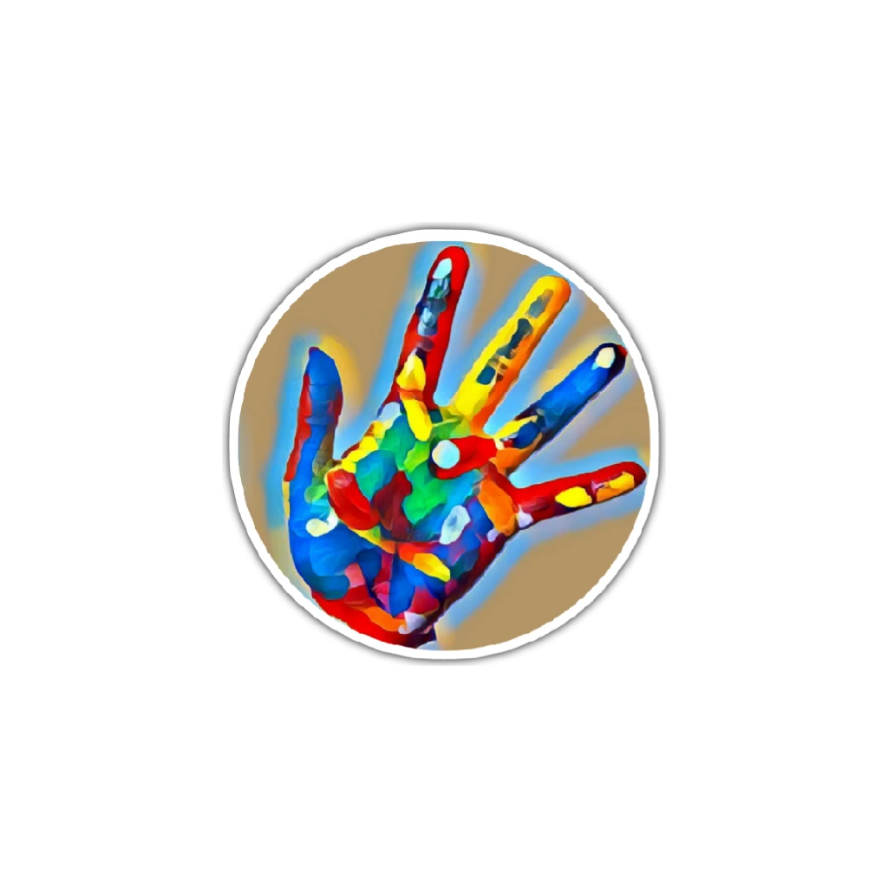

<ion-app>
  <ion-header [translucent]="true">
    <ion-toolbar>
      
      <ion-searchbar id="custom-search"></ion-searchbar>
      <ion-buttons slot="end">
        <ion-menu-button ></ion-menu-button>
      </ion-buttons>
    </ion-toolbar>
  </ion-header>

  <ion-content fullscreen>
    <div *ngIf="artwork">
      <ion-card>
        
        <ion-card-header class="ion-text-center">
          <ion-card-title>{{ artwork.title }}</ion-card-title>
          <ion-card-subtitle> {{ artwork.provenance }}, {{ artwork.date }} </ion-card-subtitle>
        </ion-card-header>
        <ion-card-content>
          {{ artwork.literature }}
        </ion-card-content>
        <div class="ion-text-center">
          <ion-button (click) = lastPage() > Back </ion-button>
          <ion-button (click) = favoriteButton() ><ion-icon name="heart-dislike-outline"></ion-icon></ion-button>
        </div>
      </ion-card>
    </div>
  </ion-content>
</ion-app>
